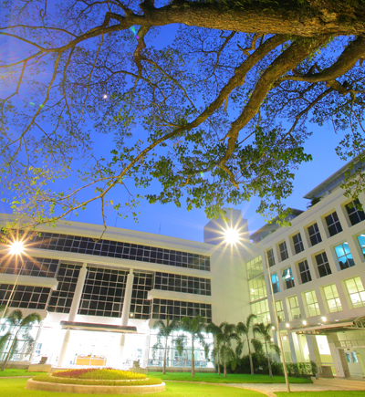

index
Vision and Mission
History
Chiang Mai University (CMU), a main government university in northern Thailand, has 25,394 students and 1,714
academic staff (2004). The Thai government has proposed CMU to be the aviation hub for Greater Mekong Sub-region
(GMS) nations including Laos, Burma, China, Cambodia and Vietnam, and has recently declared Chiang Mai as one of
three ICT (Information and Communication Technology) Cities. The government activities cover the development of
e-tourism, e-business for handicraft industry, e-commerce, e-government, e-learning, alternative media, game,
animation, mobile, e-business for SMEs and larger organizations. The city provides modern infrastructure for
international business investment, because its economy mainly depends on tourism handicraft and software
businesses. CMU has just established a new college called College of Arts, Media and Technology (CAMT). CAMT
focuses on human resource development and innovation in ICT for tourism, handicraft and software industries in
Northern Thailand. CAMT is aiming at offering undergraduate programs in software engineering, animation,
e-tourism and handicraft design. At a post-graduate level, CAMT grants degrees for both Master’s and Doctoral
studies for experienced knowledge workers. Research groups are set up in the college to support industrial
research.

Philosophy
To ensure that all graduates of the College of Arts Media and Technology can apply innovative knowledge into an
international environment in order to foster the development of the knowledge-based economy. Thus to ensure that
we are the
“International Knowledge Worker”
Mission
Educational Management; organize a course of study that focused on academic excellence. Responding to the
national development strategy of Thailand 4.0 and producing graduates who are good, smart, knowledgeable,
practical and international.
Researching; research and develop research collaboration with the digital industry. Create digital innovations
that can be used for real purposes and able to transfer technology to industries or use it commercially to
generate income, including disseminating research work to the international level.
Academic Services; provide academic services to society in order to apply knowledge of information technology to
the benefit in both forms for earning income and social development.
Management; develop administrative and management systems using information technology under the regulated
university system with the principles of good governance efficiency and effectiveness.
Strategy
To develop human resources and new knowledge to support academia
To develop Chiang Mai University’s academic excellence in the area of information communication and technology
for tourism, arts, and handicraft-design industries.
To develop Chiang Mai University’s academic excellence for alternative media i.e. e-newspaper, e-radio, web TV
etc.
To support the investment of government and private sector’s and to improve the competitiveness of northern
region by building Chiang Mai as a center of sustainable development in GMS area
Vision
“Toward creating innovation to sustainability”
Responsibility
Provide graduates training in human resource management in order to meet the requirement of tourism, handicraft
and software industries
Research on knowledge innovation to support tourism, handicraft and software industries
To support learning and decision making for large-sized organization by the use of knowledge management systems